In viticulture, sugar content (Brix) is a key indicator of grape ripeness and quality.
Research Question:How does sun exposure, soil moisture, and other environmental and physiological factors influence Brix, and does soil moisture moderate the effect of sun exposure?
2. Data
We use Kaggle data Grape Quality dataset which includes:
quality_score (numeric)
variety (categorical)
region (categorical)
sugar_content_brix (numeric; outcome for this analysis)
acidity_ph (numeric)
sun_exposure_hours (numeric)
soil_moisture_percent (numeric)
rainfall_mm (numeric)
cluster_weight_g (numeric)
berry_size_mm (numeric)
harvest_date (date)
3. DAG (Directed Acyclical Graph)
Draw a DAG explaining the relationships between the variables.
Mediators: soil_moisture_percent (between rainfall and Brix), harvest_date (ripening progression)
Collider caution: variables influenced by both variety and environment (e.g., berry_size_mm) can behave as colliders; avoid conditioning unless justified by the DAG
4. Statistical Model
We will use a Gamma regression because °Brix is a positive continuous variable and may be right-skewed.
Moreover, for this analysis, we assume the observations are independent of the explanatory variables and the response.
Diagnostic Tests: Predicted vs observed plots and residual checks
Inference: Interpret the coefficients with confidence intervals
Blog post: Present results in Quarto with narrative and figures
Preparation and Data Cleaning
# Import librarieslibrary(tidyverse)
── Attaching core tidyverse packages ──────────────────────── tidyverse 2.0.0 ──
✔ dplyr 1.1.3 ✔ readr 2.1.4
✔ forcats 1.0.0 ✔ stringr 1.5.0
✔ ggplot2 3.4.4 ✔ tibble 3.2.1
✔ lubridate 1.9.2 ✔ tidyr 1.3.0
✔ purrr 1.0.2
── Conflicts ────────────────────────────────────────── tidyverse_conflicts() ──
✖ dplyr::filter() masks stats::filter()
✖ dplyr::lag() masks stats::lag()
ℹ Use the conflicted package (<http://conflicted.r-lib.org/>) to force all conflicts to become errors
library(lubridate)library(janitor)
Attaching package: 'janitor'
The following objects are masked from 'package:stats':
chisq.test, fisher.test
library(ggplot2)library(dplyr)set.seed(0)# reading in datagrapes <-read.csv("GRAPE_QUALITY.csv") |>clean_names()# Inspect distributon of Brixhist(grapes$sugar_content_brix, main ="Histogram of Brix", xlab ="Sugar Content (Brix")
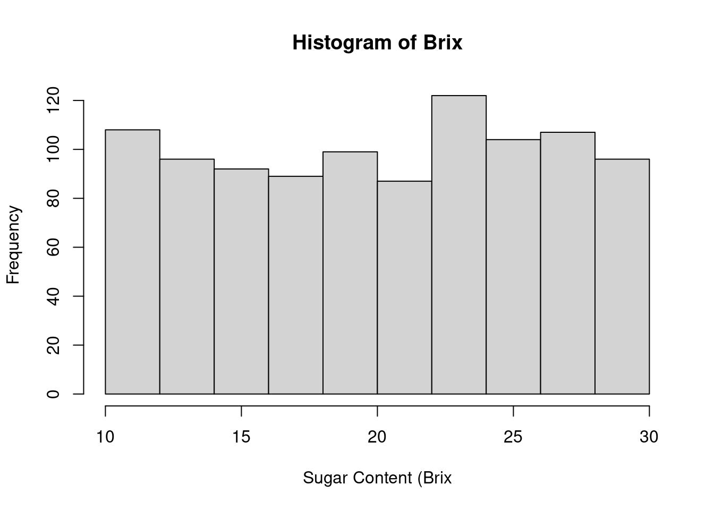
Exploratory Analysis
This section will explore at the surface level, the main predictors and response variables. The purpose is to build insight as to the shape and “look” of the data.
Shape and Types
# viewing a summary of the type of columns and valuesstr(grapes)
library(lubridate)grapes <- grapes %>%mutate(harvest_date =as.Date(harvest_date)) # assumes format "YYYY-MM-DD"
# checking for NAswhich(is.na(grapes))
integer(0)
# summarizing columnssummary(grapes)
sample_id variety region quality_score
Min. : 1.0 Length:1000 Length:1000 Min. :1.100
1st Qu.: 250.8 Class :character Class :character 1st Qu.:2.100
Median : 500.5 Mode :character Mode :character Median :2.500
Mean : 500.5 Mean :2.494
3rd Qu.: 750.2 3rd Qu.:2.870
Max. :1000.0 Max. :3.970
quality_category sugar_content_brix acidity_ph cluster_weight_g
Length:1000 Min. :10.06 Min. :2.800 Min. : 50.2
Class :character 1st Qu.:14.82 1st Qu.:3.167 1st Qu.:122.6
Mode :character Median :20.38 Median :3.500 Median :195.3
Mean :20.14 Mean :3.503 Mean :197.1
3rd Qu.:25.21 3rd Qu.:3.860 3rd Qu.:271.3
Max. :29.99 Max. :4.200 Max. :349.9
berry_size_mm harvest_date sun_exposure_hours soil_moisture_percent
Min. :10.00 Min. :2023-08-01 Min. : 6.000 Min. :30.10
1st Qu.:13.68 1st Qu.:2023-08-16 1st Qu.: 7.500 1st Qu.:39.60
Median :17.41 Median :2023-09-01 Median : 8.900 Median :49.40
Mean :17.41 Mean :2023-08-31 Mean : 8.993 Mean :49.73
3rd Qu.:21.10 3rd Qu.:2023-09-15 3rd Qu.:10.400 3rd Qu.:60.30
Max. :24.97 Max. :2023-09-30 Max. :12.000 Max. :70.00
rainfall_mm
Min. :200.1
1st Qu.:341.6
Median :490.4
Mean :489.4
3rd Qu.:628.6
Max. :799.3
Exploratory Visualization: By Region and Variety
# Scatter plots to view our predictors of interestggplot(grapes, aes(x = sun_exposure_hours, y = sugar_content_brix, color = region)) +geom_point(alpha = .8) +geom_smooth(method ="ls", se =FALSE) +facet_wrap(~ region) +labs(title ="Sun Exposure vs Brix by Region",x ="Sun Exposure (hours)", y ="Sugar Content (Brix)")
`geom_smooth()` using formula = 'y ~ x'
Warning: Computation failed in `stat_smooth()`
Computation failed in `stat_smooth()`
Computation failed in `stat_smooth()`
Computation failed in `stat_smooth()`
Computation failed in `stat_smooth()`
Computation failed in `stat_smooth()`
Computation failed in `stat_smooth()`
Computation failed in `stat_smooth()`
Caused by error in `method()`:
! unused arguments (data = data, weights = weight)
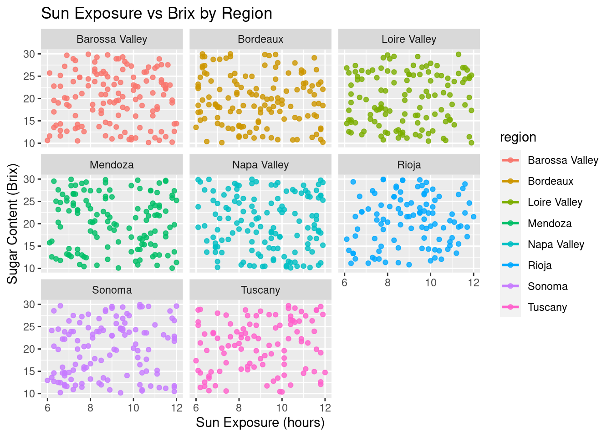
# Scatter plots to view our predictors of interestggplot(grapes, aes(x = soil_moisture_percent, y = sugar_content_brix, color = variety)) +geom_point(alpha = .8) +geom_smooth(method ="ls", se =FALSE) +facet_wrap(~ variety) +labs(title ="Sun Exposure vs Brix by Variety",x ="Sun Exposure (hours)", y ="Sugar Content (Brix)")
`geom_smooth()` using formula = 'y ~ x'
Warning: Computation failed in `stat_smooth()`
Computation failed in `stat_smooth()`
Computation failed in `stat_smooth()`
Computation failed in `stat_smooth()`
Computation failed in `stat_smooth()`
Computation failed in `stat_smooth()`
Computation failed in `stat_smooth()`
Computation failed in `stat_smooth()`
Caused by error in `method()`:
! unused arguments (data = data, weights = weight)
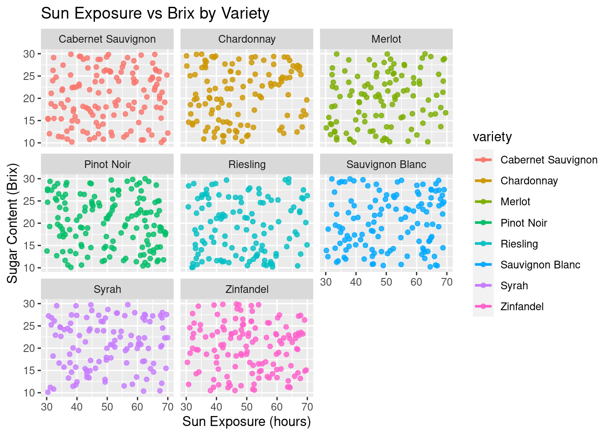
# Scatterplot: Soil moisture vs brixggplot(grapes, aes( x = soil_moisture_percent, y = sugar_content_brix, color = variety)) +geom_point(alpha = .8) +geom_smooth(alpha = .6) +geom_smooth(method ="lm", se =FALSE) +labs(title ="Soil Moisture vs Brix by Variety")
`geom_smooth()` using method = 'loess' and formula = 'y ~ x'
`geom_smooth()` using formula = 'y ~ x'
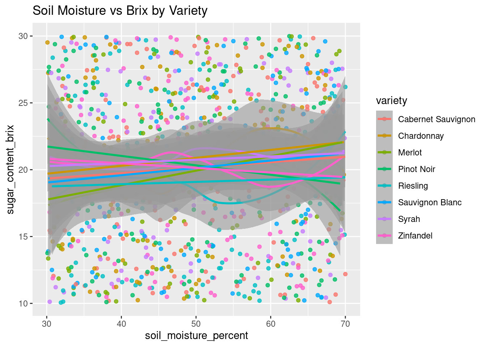
ggplot(grapes, aes(x = sun_exposure_hours, y = sugar_content_brix)) +geom_point(alpha =0.6) +geom_smooth(method ="lm", se =FALSE, color ="blue") +facet_wrap(~ region) +labs(title ="Sun Exposure vs Brix by Region",x ="Sun Exposure (hours)", y ="Sugar Content (°Brix)")
`geom_smooth()` using formula = 'y ~ x'
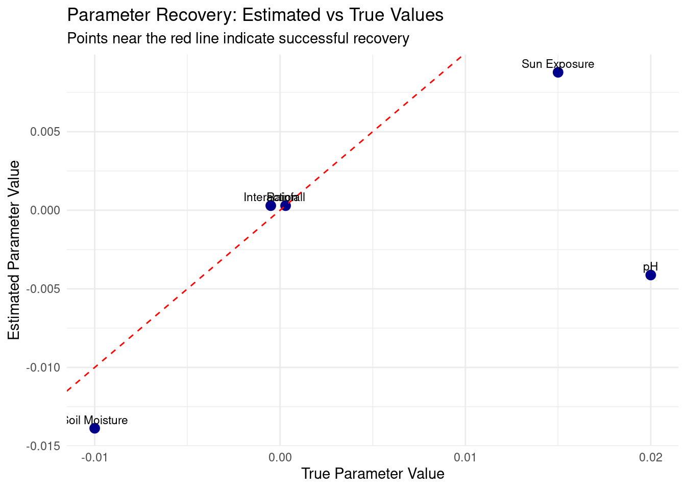
ggplot(grapes, aes(x = soil_moisture_percent, y = sugar_content_brix)) +geom_point(alpha =0.6) +geom_smooth(method ="lm", se =FALSE, color ="blue") +facet_wrap(~ variety) +labs(title ="Soil Moisture vs Brix by Variety",x ="Soil Moisture (%)", y ="Sugar Content (°Brix)")
`geom_smooth()` using formula = 'y ~ x'
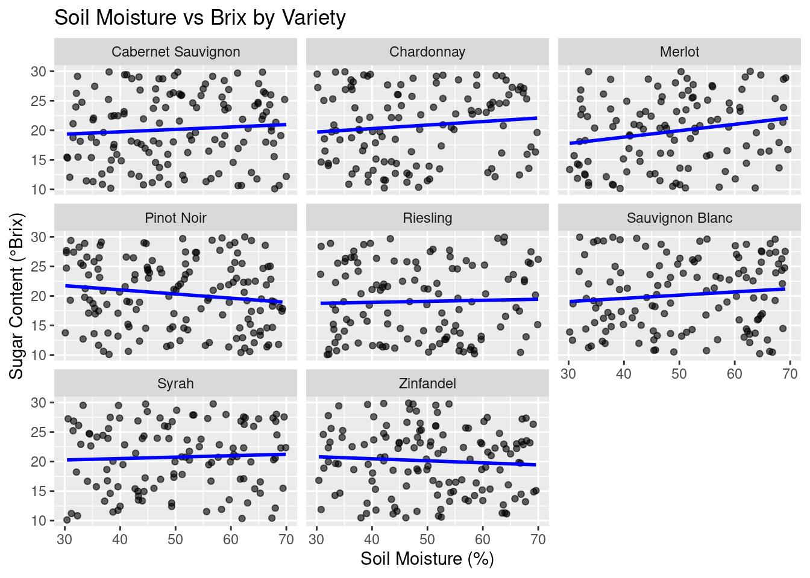
ggplot(grapes, aes(x = sun_exposure_hours, y = sugar_content_brix)) +geom_point(alpha =0.6) +geom_smooth(method ="lm", se =FALSE, color ="blue") +facet_wrap(~ quality_category) +labs(title ="Sun Exposure vs Brix by Quality Category",x ="Sun Exposure (hours)", y ="Sugar Content (°Brix)")
`geom_smooth()` using formula = 'y ~ x'
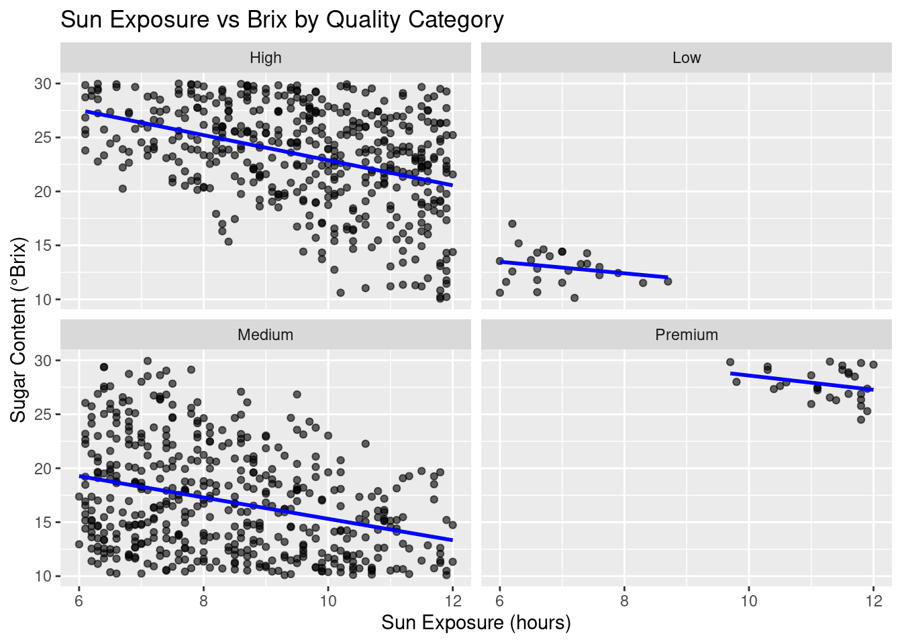
ggplot(grapes, aes(x = rainfall_mm, y = sugar_content_brix)) +geom_point(alpha =0.6) +geom_smooth(method ="lm", se =FALSE, color ="blue") +facet_wrap(~ quality_category) +labs(title ="Sun Exposure vs Brix by Quality Category",x ="Sun Exposure (hours)", y ="Sugar Content (°Brix)")
`geom_smooth()` using formula = 'y ~ x'
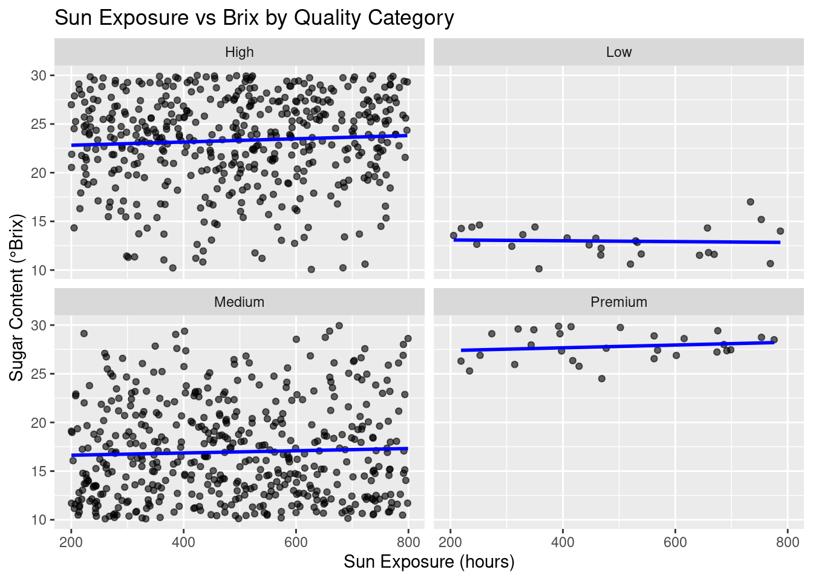
ggplot(grapes, aes(x = soil_moisture_percent, y = sugar_content_brix)) +geom_point(alpha =0.6) +geom_smooth(method ="lm", se =FALSE, color ="blue") +facet_grid(region ~ quality_category, scales ="free_y") +labs(title ="Soil Moisture vs Brix by Region and Quality Category",x ="Soil Moisture (%)", y ="Sugar Content (°Brix)")
`geom_smooth()` using formula = 'y ~ x'
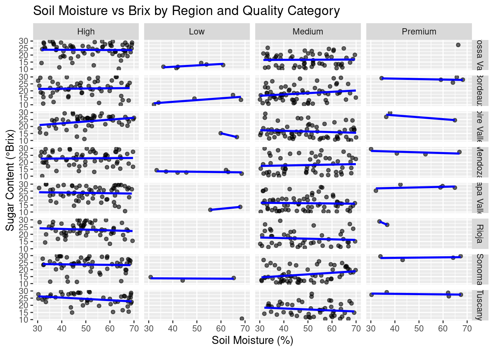
Regarding Quality Category and Brix
# graphing and color coding the quality of grapesggplot(grapes, aes(rainfall_mm, sugar_content_brix, colour = quality_category)) +geom_point()
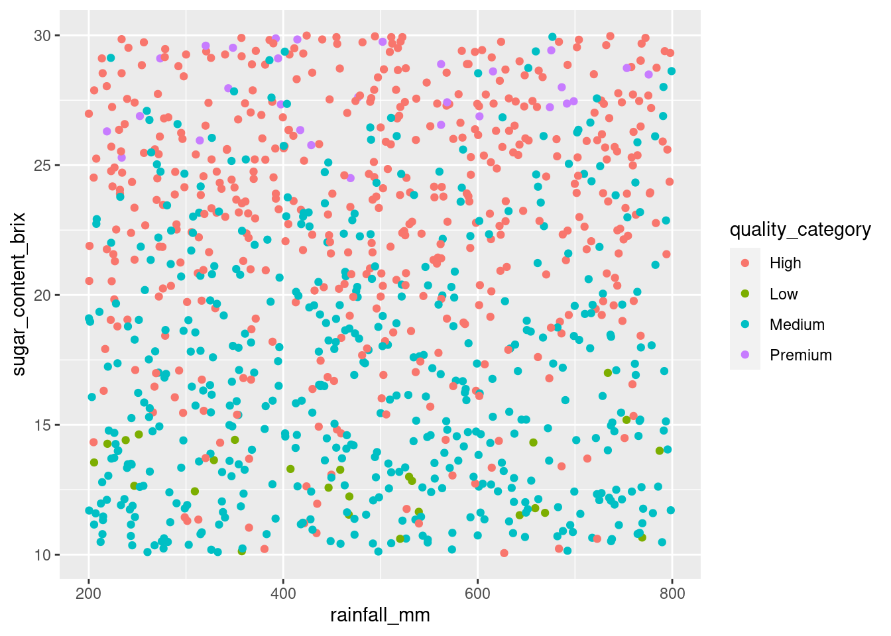
# graphing and color coding the quality of grapesggplot(grapes, aes(sun_exposure_hours, sugar_content_brix, colour = quality_category)) +geom_point()
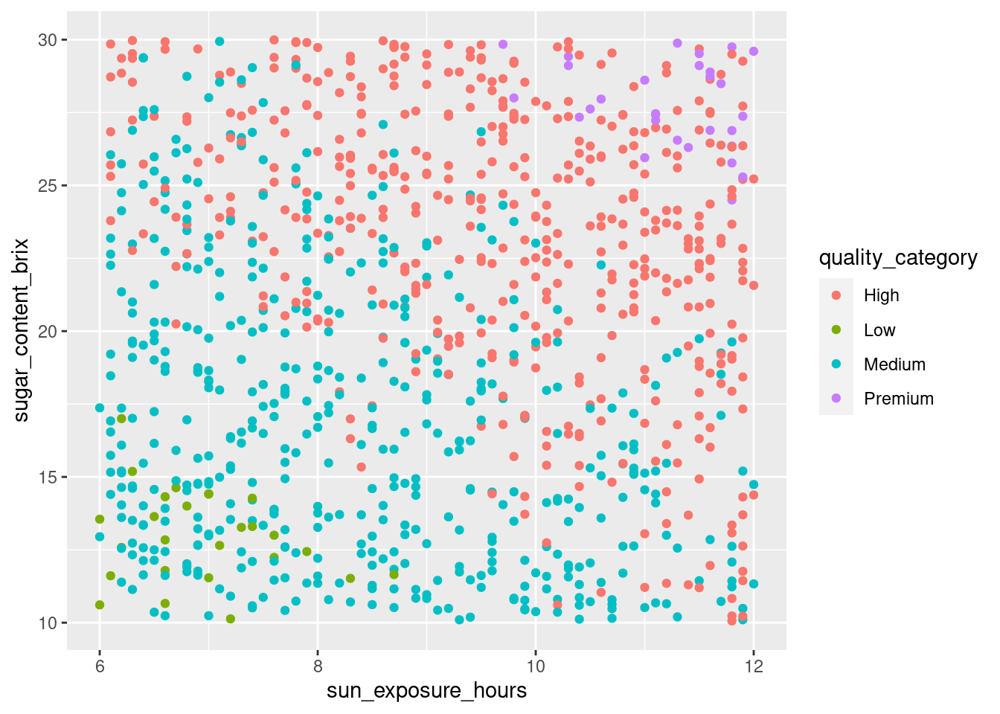
# graphing and color coding the quality of grapesggplot(grapes, aes(rainfall_mm, quality_score, colour = quality_category)) +geom_point()
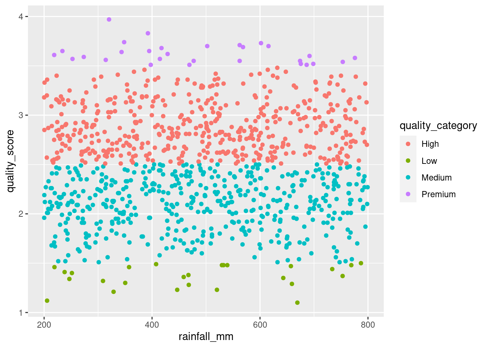
We can see that scores of quality of grapes are about a half point each. We can see visually that the quality of grapes MAY go down as rainfall is low of high.
#Plotting acidity as a response to varietyggplot(grapes, aes(acidity_ph,sugar_content_brix, colour = quality_category)) +geom_point()
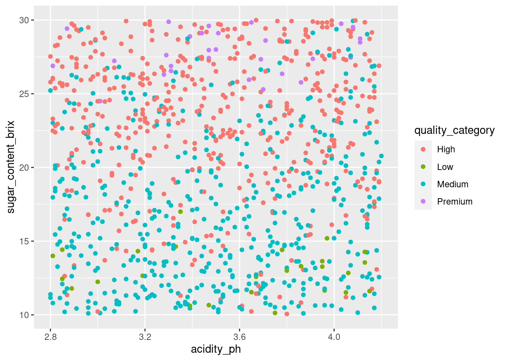
# graphing the quality score against sun exposureggplot(grapes, aes(sun_exposure_hours, quality_score, colour = quality_category)) +geom_point()
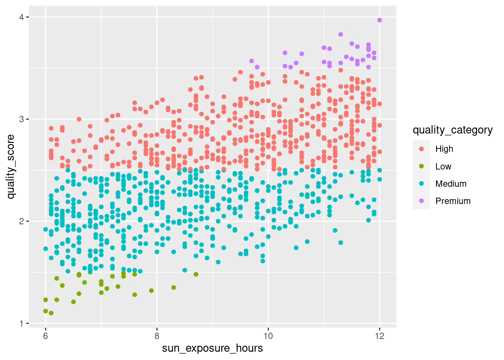
The graph depicts the positive increasing relationship, however, interestingly enough it seems that for each type of grape, incrasing sun exposore have a decreasing effect of measured grapes. This leads to believe that there is a sweet spot for sun exposure. Applying an analysis similar to pesticide abundance might prove useful.
Interesting points
plot would be related to the ribbon and CI of means of scores
Based on the data, it seems that only high quality grapes tend to need 9+ hours of sun exposure
For low quality grapes, the number of these grapes tend to decrease as
ggplot(grapes, aes(quality_category)) +geom_bar()
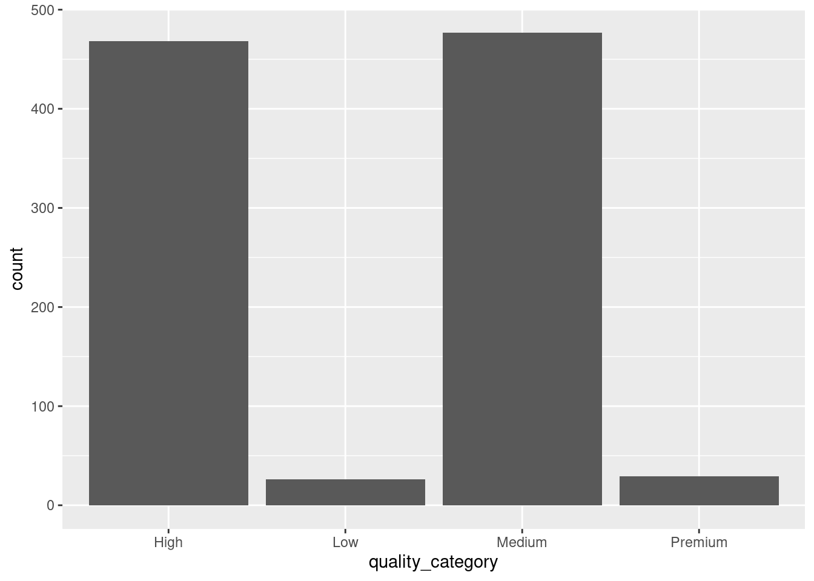
Based on this, we have a majority of grapes that are within the medium and high quality category. This may be due to just lack of data or a causal effect of variables
# This plot will provide scores by weekly breaks, not that July and October is included but no dates are present in data setggplot(grapes, aes(x = harvest_date, y = sugar_content_brix, color = quality_score)) +geom_point(alpha =0.7) +geom_smooth(method ="loess", se =FALSE, color ="black") +facet_wrap(~ variety) +scale_color_viridis_c(option ="plasma") +scale_x_date(date_breaks ="1 week", date_labels ="%b %d") +labs(title ="Brix vs Harvest Date by Variety",x ="Harvest Date", y ="Sugar Content (°Brix)",color ="Quality Score") +theme(axis.text.x =element_text(angle =90, hjust =1))
`geom_smooth()` using formula = 'y ~ x'
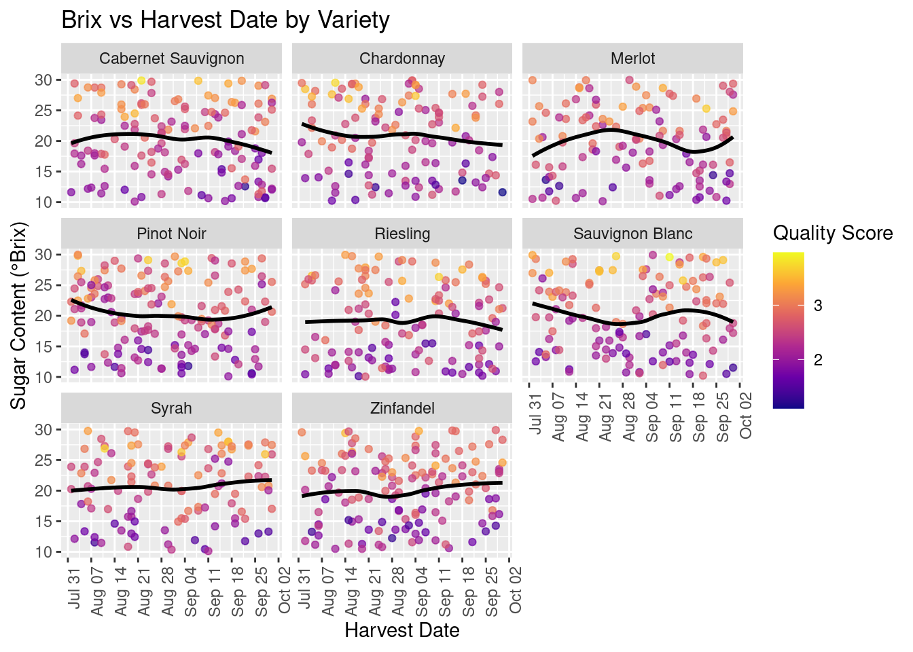
# Plot the graph based on only type of grape and a specified regionggplot(grapes, aes(x = harvest_date, y = sugar_content_brix, color = quality_score)) +geom_point(alpha =0.7) +geom_smooth(method ="loess", se =FALSE, color ="black") +facet_wrap(~ region) +scale_color_viridis_c(option ="plasma") +scale_x_date(date_breaks ="1 week", date_labels ="%b %d") +labs(title ="Brix vs Harvest Date by region",x ="Harvest Date", y ="Sugar Content (°Brix)",color ="Quality Score") +theme(axis.text.x =element_text(angle =90, hjust =1))
Null Deviance: Measures the “goodness of fit” of the GLM. This assesses the performance of the model, the lower the value, the better fit.
Residual deviance:
Main Predictors - Sun exposure hours: estimate: -.001; p = 0.96818, evidence of effect - Soil moisture percent: estimate: .0003, p = .95, no evidence of effect. - Interaction (Sun × Soil Moisture): estimate = .000088, p = 0.85, not significant.
Other Predictors - Rainfall: estimate = .000085, p = 0.13; weak positive trend, not significant. - Acidity (pH): estimate ≈ 0.015, p = 0.53; no evidence. - Cluster weight & berry size: both non‑significant.
Harvest Dates - A few dates of harvest show a negative coefficient with a p < .05 - This may indicate that the grapes harvest may suggest a temporal variation.
Variety & Region - None of the categorical adjustments are significant - However, must keep in the model for confounding factors
Checking Residuals against predicted vs observed
# Generate predicted brixgrapes <- grapes |># add the predictions as a new column in grapes dfmutate(predicted_brix =predict(model_gamma, type ="response"))# plot the predicted and observed brixggplot(grapes, aes(x = predicted_brix, y = sugar_content_brix)) +geom_point(alpha = .6) +# Create "perfect" prediction of an angle of one for reference purposesgeom_abline(slope =1, intercept =0, color ="green") +labs(title ="Predicted vs Observed Brix",x ="Predicted Brix", y ="Observed Brix")
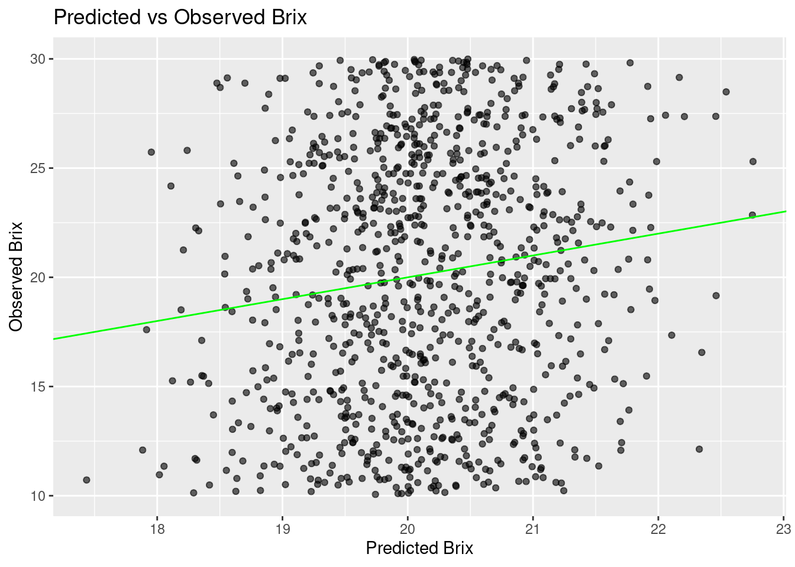
# Residual vs Fitted# Checking for variance of errors across rangeplot(model_gamma, which =1)
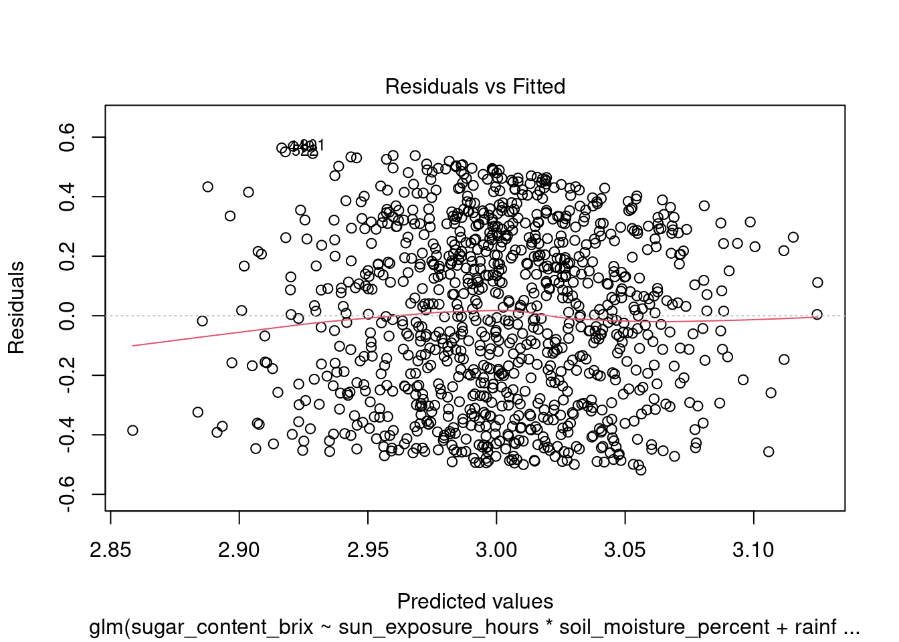
The points do not fit along the line and are quite scattered illustrating a not a great fit.
The table above estimate the multiplicative effect based on the log link scale. The standard error estimates uncertainty P-value is the probability of observing this effect if the true coefficient was zero If our estimates crosses 0, that notes possible evidence of effect
# Filter for main predictors of interestresults |>filter (term %in%c("sun_exposure_hours","soil_moisture_percent","rainfall_mm","acidity_ph","cluster_weight_g","berry_size_mm","sun_exposure_hours:soil_moisture_percent"))